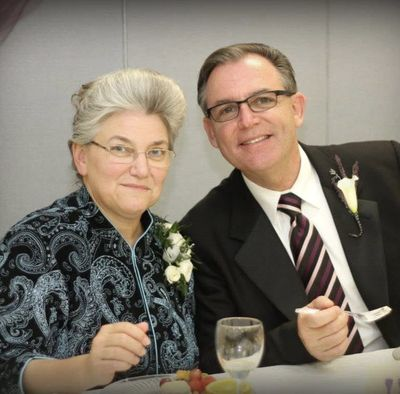

No board. No staff. Men who show up.
There are no officers and no directors. There is Howard Finnicum, who leads the whole of the work, one pastor in each church, and men who help because they want to.

Howard Finnicum
Leads the work
Has been training believers for parts of five decades. After laboring faithfully in a local church for most of that time, he now splits his time between Roanoke, Virginia and overseeing the whole of the work in Honduras. He has three grown children and 16 grandchildren, and he serves God faithfully with his wife Patricia of over thirty years.
Each of the five churches has its own pastor, living in that community and known to the families there. They are the work. We go back every year.